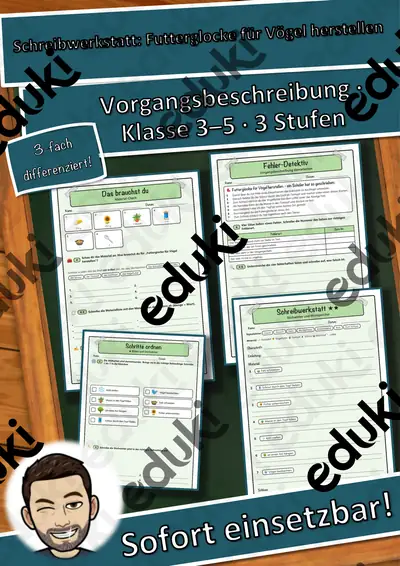
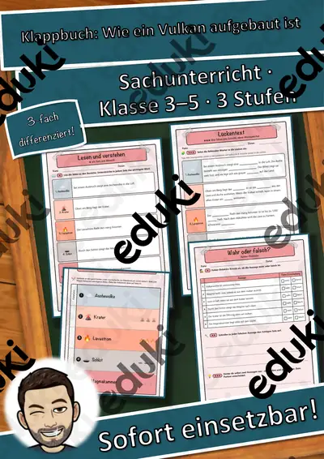

Online-Bewerbung – Bewerbung & Praktikum, 3 Stufen, mit Hilfen & Lösungen (Klasse 7–10)

Sport-Werkstatt Tanz & Gymnastik: Aufgabenkarten in 3 Stufen & Kurztest (Klasse 3–8)

Bewerbungsfoto, Mappe & E-Mail-Bewerbung – Bewerbung & Praktikum, 3 Stufen, mit Hilfen & Lösungen (Klasse 7–10)

Sport-Werkstatt Unihockey: Aufgabenkarten in 3 Stufen & Kurztest (Klasse 3–8)

Lebenslauf: tabellarisch, Lücken, Layout – Bewerbung & Praktikum, 3 Stufen, mit Hilfen & Lösungen (Klasse 7–10)

Anschreiben: Formulierungshilfen & Fehler finden – Bewerbung & Praktikum, 3 Stufen, mit Hilfen & Lösungen (Klasse 7–10)

Sport-Werkstatt Tischtennis: Aufgabenkarten in 3 Stufen & Kurztest (Klasse 3–8)

Schreibwerkstatt Vorgangsbeschreibung – Gesamtpaket: alle 12 Einheiten in 3 Stufen (Klasse 3–5)

Schreibwerkstatt Vorgangsbeschreibung – Paket Alltag, Sport & Technik: 4 Einheiten in 3 Stufen (Klasse 3–5)

Sport-Werkstatt Badminton: Aufgabenkarten in 3 Stufen & Kurztest (Klasse 3–8)

Anschreiben: Aufbau & Bausteine – Bewerbung & Praktikum, 3 Stufen, mit Hilfen & Lösungen (Klasse 7–10)

Sport-Werkstatt Schwimmen & Baderegeln: Aufgabenkarten in 3 Stufen & Kurztest (Klasse 3–8)

Schreibwerkstatt Vorgangsbeschreibung – Paket Basteln & Natur: 4 Einheiten in 3 Stufen (Klasse 3–5)

Praktikumsreflexion – Bewerbung & Praktikum, 3 Stufen, mit Hilfen & Lösungen (Klasse 7–10)

Schreibwerkstatt Vorgangsbeschreibung – Paket Küche & Experimente: 4 Einheiten in 3 Stufen (Klasse 3–5)

Sport-Werkstatt Gerätturnen: Aufgabenkarten in 3 Stufen & Kurztest (Klasse 3–8)

Sport-Werkstatt Leichtathletik: Aufgabenkarten in 3 Stufen & Kurztest (Klasse 3–8)

Schreibwerkstatt Vorgangsbeschreibung: Einen Text am Computer speichern – 3 Stufen & Kurztest (Klasse 3–5)

Bewerbung und Praktikum Praktikumsmappe und Praktikumsbericht

Schreibwerkstatt Vorgangsbeschreibung: Futterglocke für Vögel herstellen – 3 Stufen & Kurztest (Klasse 3–5)

Sport-Werkstatt Fußball: Aufgabenkarten in 3 Stufen & Kurztest (Klasse 3–8)

Tagesbericht & Wochenbericht – Bewerbung & Praktikum, 3 Stufen, mit Hilfen & Lösungen (Klasse 7–10)

Verhalten im Betrieb – Bewerbung & Praktikum, 3 Stufen, mit Hilfen & Lösungen (Klasse 7–10)

Schreibwerkstatt Vorgangsbeschreibung: Seilspringen lernen – 3 Stufen & Kurztest (Klasse 3–5)

Sport-Werkstatt Handball: Aufgabenkarten in 3 Stufen & Kurztest (Klasse 3–8)

Schreibwerkstatt Vorgangsbeschreibung: Schuhe mit Schleife binden – 3 Stufen & Kurztest (Klasse 3–5)

LF 4 Verkäufer/-in: Preis- und Warenauszeichnung nach der PAngV – Übungen, Lösungen + Lernvideo

Lies und male Berufe – Leseverstehen und Ausmalen in 3 Stufen (Klasse 1–2, DaZ, Förder)

LF 7 Kaufleute für Büromanagement: Beschwerdemanagement & Kundenbindung – Übungen, Lösungen + Lernvideo

Arbeitsschutz & Jugendarbeitsschutzgesetz – Bewerbung & Praktikum, 3 Stufen, mit Hilfen & Lösungen (Klasse 7–10)

LF 4 Kfz-Mechatroniker/-in: Zubehör und Nachrüstungen fachgerecht anschließen – Übungen, Lösungen + Lernvideo

Schreibwerkstatt Vorgangsbeschreibung: Hände richtig waschen – 3 Stufen & Kurztest (Klasse 3–5)

Sport-Werkstatt Volleyball: Aufgabenkarten in 3 Stufen & Kurztest (Klasse 3–8)

Schreibwerkstatt Vorgangsbeschreibung: Freundschaftsband flechten – 3 Stufen & Kurztest (Klasse 3–5)

LF 11 Medizinische Fachangestellte: Früherkennungsuntersuchungen und Recall-System – Übungen, Lösungen + Lernvideo

Hörwerkstatt Geräusche: Geräuschemacher im Geisterhaus – Hörstation, 3 Stufen & Test (Klasse 2–4)

Lies und male Dinosaurier – Leseverstehen und Ausmalen in 3 Stufen (Klasse 1–2, DaZ, Förder)

LF 6 Medizinische Fachangestellte: Lagerung von Arzneimitteln und Kühlkette – Übungen, Lösungen + Lernvideo

Schreibwerkstatt Vorgangsbeschreibung: Kresse säen und ernten – 3 Stufen & Kurztest (Klasse 3–5)

Hörwerkstatt Geräusche: Körperklänge und Partitur – Hörstation, 3 Stufen & Test (Klasse 2–4)

Lernfeld 1 Verkäufer/-in: Start ins Berufsleben – Einführung, Übungen, Lösungen + Lernvideo

Schreibwerkstatt Futterglocke fuer Voegel herstellen

LF 2 Kaufleute für Büromanagement: Sitzungen professionell organisieren – Übungen, Lösungen + Lernvideo

Bewerbung um einen Praktikumsplatz – Bewerbung & Praktikum, 3 Stufen, mit Hilfen & Lösungen (Klasse 7–10)

Klappbuch-Werkstatt Sachunterricht – Gesamtpaket: alle 6 Klappbücher in 3 Stufen (Klasse 3–5)

LF 10 Kfz-Mechatroniker/-in: Achsvermessung und Fahrwerksdiagnose – Übungen, Lösungen + Lernvideo

Winter-Lesewelten Materialpaket: 3 Einheiten – Differenziertes Lesetraining für die Grundschule (Grundschule, Klasse 1–3

Klappbuch-Werkstatt: Wie ein Vulkan aufgebaut ist – Sachunterricht, 3 Stufen & Kurztest (Klasse 3–5)
Keine Materialien gefunden – versuch einen anderen Suchbegriff oder Filter.